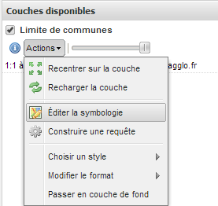
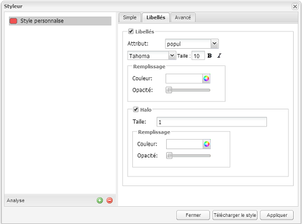
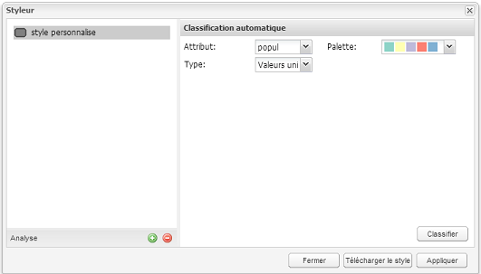
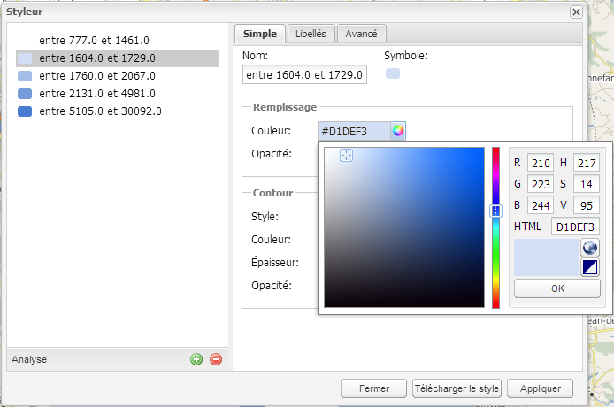

Styler une couche d'informations en filtrant et/ou en adoptant ses propres codes couleur.
Requêter une couche d'informations en fonction de critères spatiaux et/ou alphanumériques
Télécharger des données via l'extracteur (accessible sur demande).
Pour agir sur le stylage de la couche, il faut cliquer sur le bouton « Actions » de la couche et ouvrir « Editer la symbologie »
Pastille 1 : clic sur le bouton « + »,
Pastille 2 : saisie du nom du style qui apparaîtra dans la légende,
Pastille 3 : choix de la couleur du symbole et de sa transparence,
Pastille 4 : choix des éléments de représentation du contour du symbole
En cliquant sur «Libellés», on peut ajouter une couche d'étiquettes
Pastille 1 : choix du champ de la table contenant les libellés,
Pastille 2 : choix concernant la police d'écriture qui décrira le libellé,
Pastille 3 : choix de la couleur du libellé et de sa transparence,
Pastille 4 : possibilité de paramétrer un halo autour du libellé.
L'analyse thématique offre la possibilité de créer une légende différenciée en fonction de valeurs d'un champ descriptif de la couche d'informations.
Pastille 1 : On cliquera sur le bouton « Analyse »,
Pastille 2 : choix de l'attribut servant à différencier les éléments de la couche et de son type de représentation,
Pastille 3 : choix d'une palette de couleurs prédéfinie.
Types de représentation possible :
valeurs uniques : 1 symbologie pour chaque valeur (valable pour tout type de champs),
plages de couleurs : représentation par classes de rangement des valeurs (uniquement pour champs numériques),
symboles proportionnels : représentation par symboles proportionnels (uniquement pour champs numériques)
Il est possible de filtrer les informations d'une couche représentée par seuil d'affichage et/ou par une condition liée aux informations descriptives
Filtrage par seuil d'affichage : Dans l'éditeur de symbologie, il faut choisir l'onglet « Avancé », Cocher la case de « Limite par échelle » et entrer les valeurs min et/ou max souhaitée en visibilité
Filtrage par condition(s) Dans l'éditeur de symbologie, il faut choisir l'onglet « Avancé », Cocher la case de « Limite par condition» et décrire la(es) limitation(s) souhaitée(s) en fonction des champs présents dans la couche
Attention : La condition émise est sensible à la casse et aux accents ! Il faut bien connaître les données pour les manipuler.
Une fois le style préparé avec l'éditeur de style de GeoViennAgglo, vous avez la possibilité d'enregistrer ce style sous la forme d'un fichier xml au standard OGC SLD (Styled Layer Descriptor) en cliquant sur le bouton « Télécharger le style ».